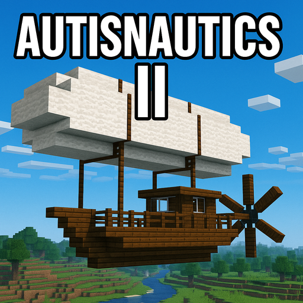

Autisnautics 1.21A Create-first tech pack with a linear quest line, Cobblemon, proximity voice chat and a working in-game AI chat bot. Public server, public releases, no account wall.
The server runs this pack only. A client on a different pack version is rejected at login — update through the launcher before connecting.
Simple Voice Chat is proximity-based and on by default. Allow UDP 24454 through your firewall or install the voice chat mod's own firewall test before joining.
Type @bot <question> in chat. The reply is broadcast to everyone online. Answers come from a language model; treat them as hints, not wikis.
Kinetic mechanisms, harnesses and machines come before Refined Storage. Controllers, patterns, drives and grids are built from Create assemblies and a calculation mechanism, not the default recipes. No AE2 shortcut.
Linear chapters with dependency-checked graph, custom rewards scripted in KubeJS, translations for Spanish, French, Portuguese, Russian and Chinese.
Contraption flight with linkage parts — andesite, brass and precision tiers — plus turbines that need a real kinetic supply.
Wild Pokémon attack unprovoked above level 10, day and night. A 128-block safezone around spawn keeps the starting island clean.
Bedrock floor and roof generate as obsidian, so bedrock farms are gone and the dreadrock layer sits above a minable floor.
Iron, diamond and netherite harnesses follow their pickaxe equivalents. Diamond and netherite harnesses mine dreadrock and the rogdoric root.
*-prism.zip release asset and import it: Add Instance → Import from zip. Prism fetches every mod on import.*-curseforge.zip asset. Importing that zip into Prism also works and downloads the mods.*-client.zip. It ships the full mods/ folder pre-filled.*-serverpack.zip. It drops straight onto a NeoForge 21.1.265 server install; no client-only mods inside..autis/version.txt against the latest GitHub release and applies the pack when the game closes. Manual: java -jar autis/updater.jar --force.| Minecraft | 1.21.1 |
| Loader | NeoForge 21.1.265 |
| Pack version | 0.1.63 — all releases |
| Mod count | 416 client / 335 server jars |
| Pack manager | Pakku (pakku.json + lock) |
| Server host | Self-hosted, US · 24 GB RAM / 24 cores |
| Client memory | 6–8 GB allocated in the launcher |
| Source | github.com/InvalidArgument3/Autisnautics-1.21 |